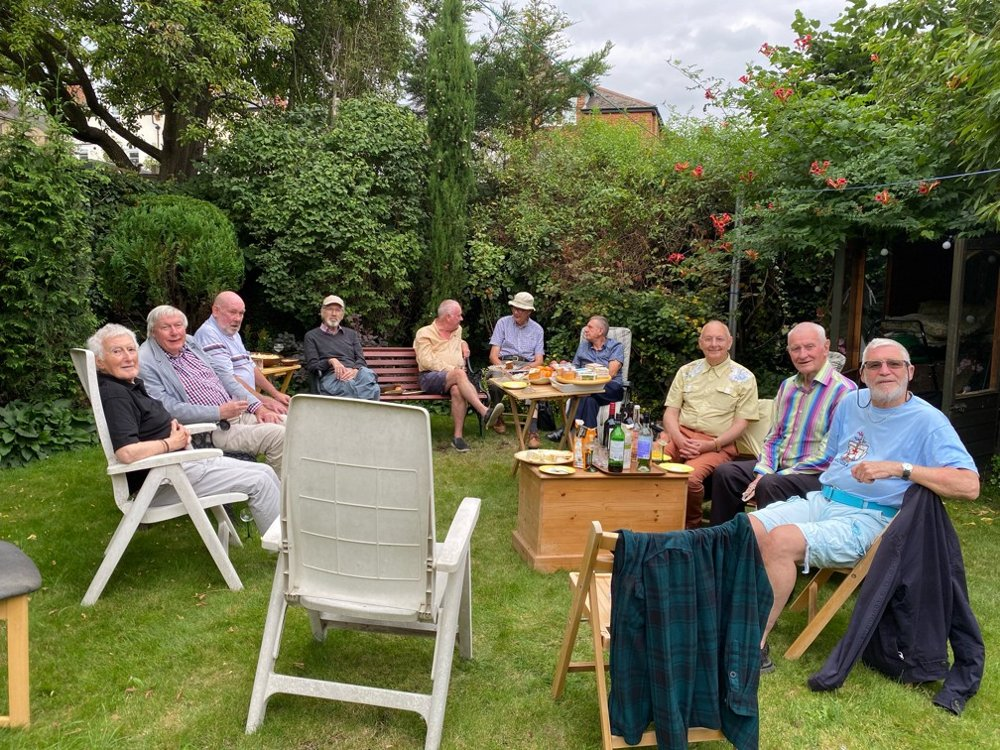

Looking for a friendly social group for gays in the South London area? Then South London Gays — SLG — could be what you're looking for. Established in 1995, SLG provides a wide range of events and activities for its members.Meetings
SLG's main focus is on the monthly meetings with guest speakers. These take place on the second Tuesday of each month at a pub in Clapham, South London. Speakers have included local MPs, gay writers, religious representatives, journalists, and members of lesbian and gay political groups.
Speakers in the past few months have included Rev Lorenzo Fernandez-Smal from St Luke's Church, Battersea, Peter Scott-Presland (presenting volume three of his history of the Campaign for Homosexual Equality (CHE)) and Mat Bradley from Lambeth Links.
View details of the forthcoming programme of speakers.
Social events
Another strong feature of SLG activity has been theatre visits. Over the past year visits have ranged from Rattigan's The Deep Blue Sea and The Seafarer at Putney Arts Theatre, to The Madwoman of Chaillot through to My Night with Reg, both at the South London Theatre.
The group also arrange regular cinema and restaurant visits, tennis matches, and DVD evenings, tea parties and coffee evenings in members' homes.
Social visits have included days out to Broadstairs and Bletchley Park, a six-day visit to Liège in Belgium, two return boat trips from Kingston to Hampton Court and a visit to the Charles Dickens Museum, Holborn. Pub visits have also become a regular feature of our programme.
Other activities
Although primarily a social group, SLG has been involved in various letter-writing campaigns on gay issues over many years and is involved in joint events with other gay groups in London and Surrey.
Membership
Membership of SLG costs £6 per year (or £14 with paper bulletins) and you do not have to live in South London!
Contact us
If you would like to join or want further details, e-mail slgnews@aol.com, or
ring Terry on 020 8674 5191 or Timothy on 020 8767 0578.There's an article about SLG in the UK LGBT Archive's online encyclopaedia:
www.lgbtarchive.uk/wiki/South_London_Gays.